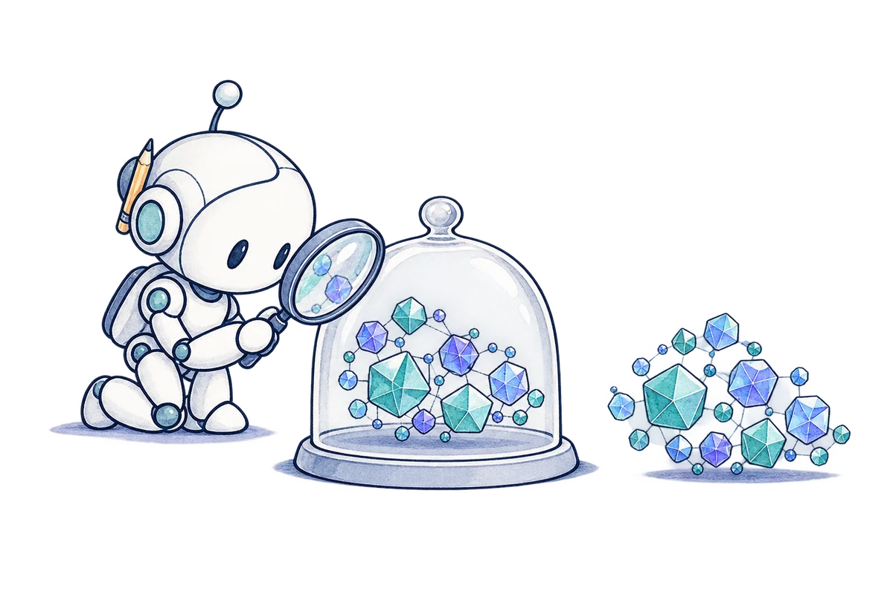
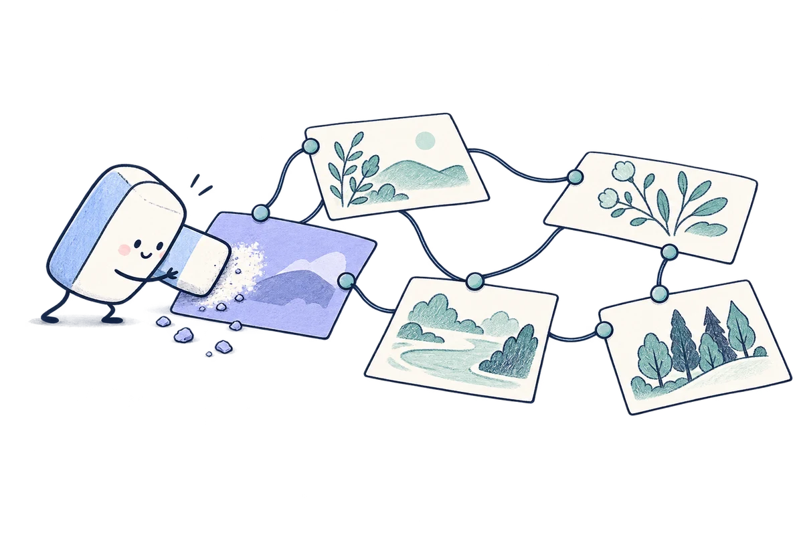
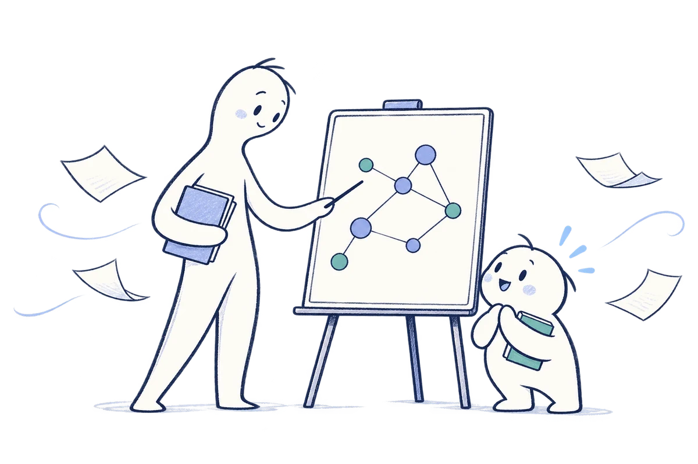
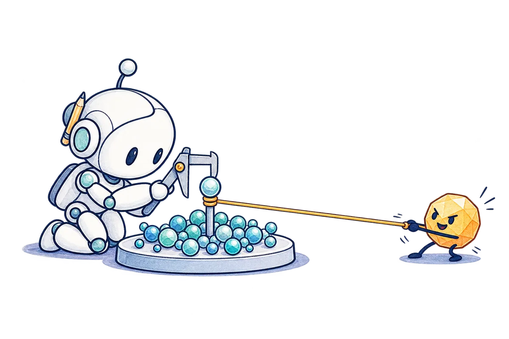
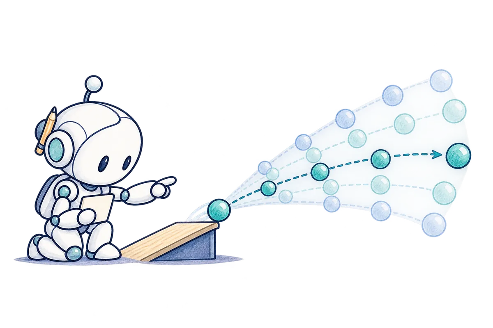
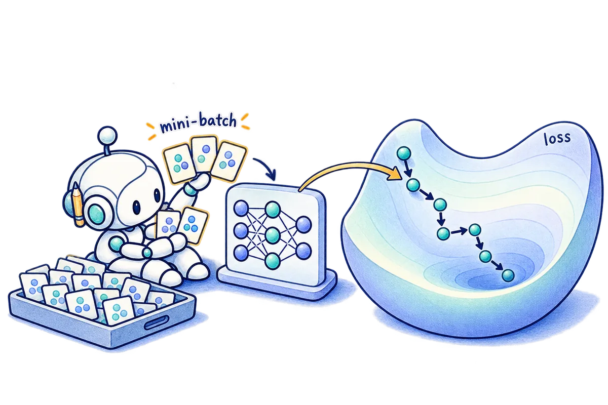
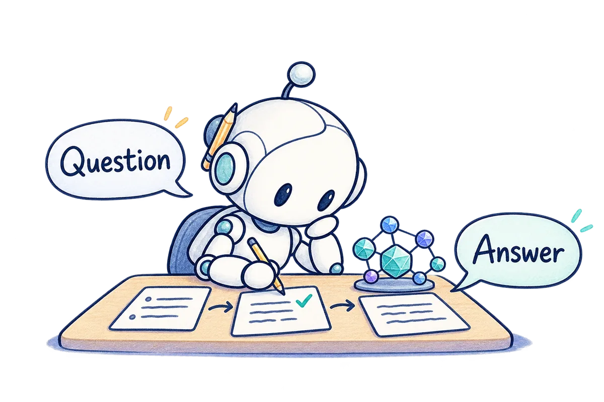
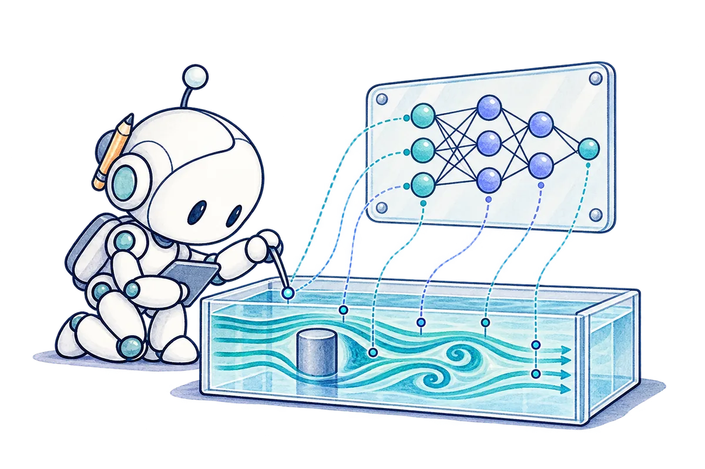
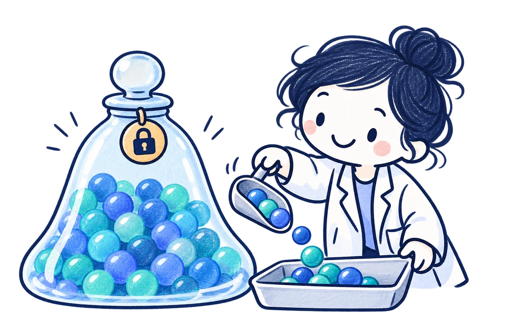

2026 / PREPRINT
Differential privacy
The foundations of differential privacy: what can be learned from data while protecting individuals’ information.
Read moreMachine learning researcher
Fundamental questions
in machine learning.
I’m curious about fundamental problems in machine learning. My interests range from privacy, robustness, and uncertainty quantification to reasoning, training dynamics, and scientific deep learning.
M.Sc. Computer Science Sharif University of Technology








Research interests
The fundamental limits of learning under privacy constraints.
01 / Selected work
2026 / PREPRINT
The foundations of differential privacy: what can be learned from data while protecting individuals’ information.
Read more2026 / IEEE TPAMI
Inverse adversarial examples help a smaller student learn a teacher’s robustness.
Read more2025 / CMAME
Penalizing residual curvature to improve how neural networks solve differential equations.
Read more
2026 / PREPRINT
How much data do we need to privately generate a batch of Gaussian samples?
Read more2026 / PREPRINT
Estimating covariance from private releases when different parties hold different features.
Read more2026 / UNDER REVIEW
Why small batches early in training can reduce reliance on spurious correlations.
Read more02 / Experience
Working on graph neural networks for long-term fluid prediction, with the goal of making simulations less expensive.
With Prof. Olga Fink
Developed a differentially private synthetic data algorithm whose error bounds depend on the geometry of the data.
With Dr. Amir-Reza Asadi
Worked on robust knowledge distillation, superalignment, and task arithmetic. The distillation work led to a paper in IEEE TPAMI.
With Prof. Yew-Soon Ong
Studied how data pruning and input-space geometry affect robustness across model architectures.
With Dr. Seyed-Mohsen Moosavi-Dezfooli
03 / Education
M.Sc. in Computer Science
2024 – present
B.Sc. in Computer Science
2018 – 2023
B.Sc. in Mathematics
2019 – 2023
04 / Teaching
05 / Coursework
All grades out of 20
Contact